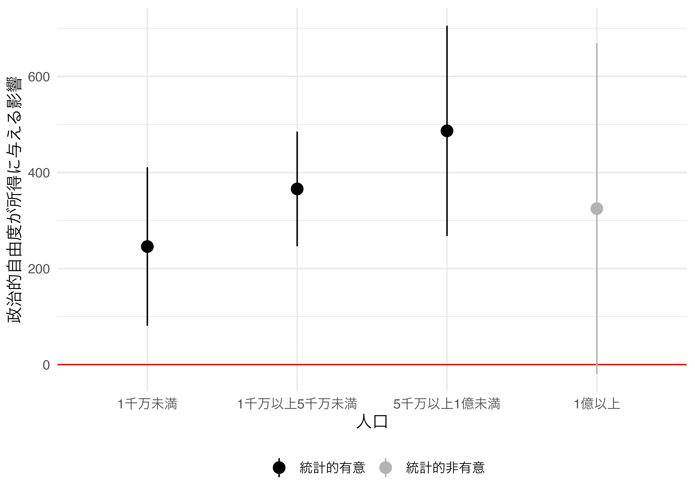

27 反復処理
27.1 *apply()関数群とmap_*()関数群
まず、我らの盟友、{tidyverse}を読み込んでおきましょう。
それでは、*apply()関数群とmap_*()関数群の動きとその仕組について調べてみましょう。まず、実習用データとして長さ5のnumericベクトルnum_vecを用意します。
このnum_vecの個々の要素に2を足す場合はどうすれば良いでしょうか。Rはベクトル単位での演算が行われるため、num_vec + 2だけで十分です。+の右側にある2は長さ1のベクトルですが、num_vecの長さに合わせてリサイクルされます（第9.2章を参照）。
賢明なRユーザーなら上のコードが正解でしょう。しかし、これからの練習のために+を使わずに、for()文を使用してみましょう（第10.3章を参照）。
実はこれと同じ役割をする関数がRには内蔵されており、それがlapply()関数です。
以下のコードからも確認出来ますが、足し算を意味する+も関数です。ただし、演算子を関数として使う場合は演算子を`で囲む必要があり、+だと`+`と表記します。
したがって、lapply()関数を使用してnum_vecの全要素に2を足す場合、以下のようなコードとなります。
これと同じ動きをする関数が{purrr}パッケージのmap()です。{purrr}は{tidyverse}を読み込むと自動的に読み込まれます。
ただし、lapply()とmap()の場合、戻り値はリスト型となります。もし、ベクトル型の戻り値が必要な場合は更にunlist()関数を使うか、sapply()を使います。
[1] 5 4 7 6 9[1] 5 4 7 6 9map()関数ならunlist()でも良いですが、sapply()と同じ動きをするmap_dbl()があります。これは戻り値がdoubleのnumericベクトルになるmap()関数です。
もし、2を足すだけでなく、更に3で割るためにはどうすれば良いでしょうか。まず考えられるのは更にsapply()やmap_dblを使うことです。
もう一つの方法はsapply()やmap_dbl()の第二引数に直接関数を指定する方法です。
[1] 1.666667 1.333333 2.333333 2.000000 3.000000[1] 1.666667 1.333333 2.333333 2.000000 3.000000上のコードだと、num_vecの要素が第二引数で指定した関数の引数（x）として用いられます。関数が長くなる場合は、sapply()やmap()の外側に関数を予め指定して置くことも可能です。
[1] 1.666667 1.333333 2.333333 2.000000 3.000000[1] 1.666667 1.333333 2.333333 2.000000 3.000000ここまでの例だとsapply()とmap_dbl()はほぼ同じ関数です。なぜわざわざ{purrr}パッケージを読み込んでまでmap_dbl()関数を使う必要があるでしょうか。それはmap_dbl()の内部にはラムダ（lambda）式、あるいは無名関数（anonymous function）と呼ばれるものが使用可能だからです。ラムダ式は第13.1章でも説明しましたが、もう一回解説します。ラムダ式は使い捨ての関数で、map_dbl()内部での処理が終わるとメモリ上から削除される関数です。使い捨てですので、関数の名前（オブジェクト名）も与えられておりません。
このラムダ式の作り方ですが、~で始まり、引数の部分には.xが入ります1。したがって、~(.x + 2) / 3はfunction(x){(x + 2) / 3}の簡略したものとなります。ただし、後者だと無名関数の引数に該当するxをyやjなどに書き換えても問題ありませんが、ラムダ式では必ず.xと表記する必要があります。
かなり短めなコードで「num_vecの全要素に2を足して3で割る」処理ができました。一方、sapply()やlapply()のような*apply()関数群だとラムダ式を使うことはできません。現在のメモリ上にある関数のみしか使うことができません。
Error in match.fun(FUN): '~(.x + 2)/3' is not a function, character or symbolこれまでの例は正しいコードではありますが、良いコードとは言えないでしょう。なぜならnum_vec + 2という最適解が存在するからです。*apply()とmap_*()はより複雑な処理に特化しています。たとえば、リスト型データの処理です。以下の例を考えてみましょう。
num_listは3つのnumeric型ベクトルで構成されたリスト型オブジェクトです。それぞれのベクトルの平均値を求めてみましょう。これを普通にmean()関数のみで済まそうとすると、リストからベクトルを一つずつ抽出し、3回のmean()関数を使用する必要があります、
[1] 5[1] 6.571429[1] 4.666667もしリストの長さが大きくなると、以下のようにfor()文の方が効率的でしょう。
[1] 5
[1] 6.571429
[1] 4.666667計算結果をベクトルとして出力/保存する場合は予めベクトルを用意しておく必要があります。
# num_listの長さと同じ長さの空ベクトルを生成
Return_vec <- rep(NA, length(num_list))
for (i in 1:length(num_list)) {
Return_vec[i] <- mean(num_list[[i]], na.rm = TRUE)
}
Return_vec[1] 5.000000 6.571429 4.666667以上の例はsapply()、またはmap_dbl関数を使うとより短くすることができます。
List1 List2 List3
5.000000 6.571429 4.666667 List1 List2 List3
5.000000 6.571429 4.666667 *apply()もmap_*()も、それぞれの要素に対して同じ処理を行うことを得意とする関数です。他の応用としては、各ベクトルからn番目の要素を抽出することもできます。ベクトルからn番目の要素を抽出するにはベクトル名[n]と入力しますが、実はこの[も関数です。関数として使う場合は+と同様、`[`と表記します。num_list内の3つのベクトルから3番目の要素を抽出してみましょう2。
ここまで来たらmap_*()関数群の仕組みについてイメージが出来たかと思います。map_*()関数群の動きは 図 27.1 のように表すことができます。第一引数はデータであり、そのデータの各要素に対して第二引数で指定された関数を適用します。この関数に必要な（データを除く）引数は第三引数以降に指定します。この関数部（第二引数）はRやパッケージなどで予め提供されている関数でも、内部に直接無名関数を作成することもできます。この無名関数はfunction(x){}のような従来の書き方も可能ですが、map_*()関数群の場合~で始まるラムダ式を使うことも可能です。

map()の場合、返り値はリストとなり、map_dbl()の返り値はnumeric (double)型のベクトルとなります。他にもmap_*()関数群にはmap_int()、map_lgl()、map_chr()、map_df()などがあり、それぞれ返り値のデータ型/データ構造を表しています。例えば、返り値がcharacter型のベクトルであれば、map_chr()を使います。c(1, 2, 3, 4, 5)のベクトルの各要素の前に"ID: "を付ける例だと以下のように書きます。
# 以下のコードでもOK
# map_chr(c(1, 2, 3, 4, 5), ~paste0("ID: ", .x))
c(1, 2, 3, 4, 5) %>%
map_chr(~paste0("ID: ", .x))[1] "ID: 1" "ID: 2" "ID: 3" "ID: 4" "ID: 5"27.2 引数が2つ以上の場合
{purrr}を使った本格的な例を紹介する前に、引数が2つ以上の場合を考えたいと思います。まずは引数が2つの場合です。この場合、map2_*()関数群を使用します。例えば、num_vecに長さ5のnumeric型ベクトルnum_vec2をかける例を考えてみましょう。
この場合、データとしてnum_vecとnum_vec2が必要となり、ラムダ式にも2つの引数が必要です。まず、num_vec2を用意します。
続いてmap2_dbl()関数を使用しnum_vecとnum_vec2の掛け算を行います。map2_*()の使い方はmap_*()とほぼ同様です。
map_*()との違いとしては、(1) データが2つである、(2) 関数、またはラムダ式に2つの引数が必要である点です。この2点目の引数ですが、データ2は.yと表記します。したがって、データ1とデータ2の掛け算を意味するラムダ式は~.x * .yです。
num_vecとnum_vec2が必ずしも同じデータ構造、データ型、同じ長さである必要がありません。数字の前に"ID:"を付ける先ほどの例をmap2_chr()で書いてみましょう。
それでは3つ以上の引数について考えてみましょう。たとえば、num_vecの前に"ID"を付けるとします。そして"ID"とnum_vecの間に":"を入れたい場合はどうすればい良いでしょう。むろん、賢い解決方法は単純にpaste()関数を使うだけです。
この場合、引数は3つです3。この場合の書き方はどうなるでしょうか。map2_*()はデータを2つまでしか指定できません。3つ目以降は関数/ラムダ式の後ろに書くこととなります。ただし、関数/ラムダ式の後ろに指定される引数は長さ1のベクトルでなければなりません。また、ラムダ式内の引数は.xと.yでなく、..1、..2、..3、…となります。
今回の例だとmap2_chr()内にnum_vecがデータ1、"ID"がデータ2です。そして、期待される結果は、「“ID” + sepの実引数 + num_vecの値」となります。したがって、ラムダ式はpaste(..2, ..1, sep = ..3)となります。
データ2である"ID"は長さ1のcharacter型ベクトルであるため、以下のようにmap_chr()を使うことも可能です。
[1] "ID-3" "ID-2" "ID-5" "ID-4" "ID-7"それではデータを3つ以上使うにはどうすれば良いでしょうか。そこで登場するのがpmap_*()関数です。以下の3つのベクトルを利用し、「名前:数学成績」を出力してみましょう。ただし、不正行為がある場合（cheat_vecの値が1）は成績が0点になるようにしましょう。
賢い解決法は普通にpaste0()関数を使う方法です。
今回はあえてpmap_*()関数を使ってみましょう。pmap_*()の場合、第一引数であるデータはリスト型で渡す必要があります。したがって、3つのベクトルをlist()関数を用いてリスト化します。第二引数には既存の関数やラムダ式を入力し、各引数は..1、..2、…といった形で表記します。
[1] "Hadley:70" "Song:0" "Yanai:80" 第一引数はデータであるため、まずリストを作成し、パイプ演算子（%>%）でpmap_*()に渡すことも可能です。
[1] "Hadley:70" "Song:0" "Yanai:80" 27.3 データフレームと{purrr}
map_*()関数のデータとしてデータフレームを渡すことも可能です。ここでは5行3列のデータフレームを作成してみましょう。
各行のX、Y、Zの合計を計算するには{dplyr}のrowwise()とmutate()を組み合わせることで計算出来ることを第13.4章で紹介しました。
Dummy_df %>%
rowwise() %>%
mutate(Sum = sum(X, Y, Z)) %>%
# rowwise()は1行を1グループとする関数であるため、最後にグループ化を解除
ungroup()# A tibble: 5 × 4
X Y Z Sum
<dbl> <dbl> <dbl> <dbl>
1 1 10 2 13
2 2 20 4 26
3 3 30 6 39
4 4 40 8 52
5 5 50 10 65それでは各列の平均値を計算するにはどうすれば良いでしょうか。ここではR内蔵関数であるcolMeans()を使わないことにしましょう。
まず、mean(Dummy_df$X)を3回実行する方法や、{dplyr}のsummarise()関数を使う方法があります。
実はこの操作、map_dbl()関数を使えば、より簡単です。
map_dbl()はnumeric (double) 型ベクトルを返しますが、データフレーム（具体的にはtibble）に返すならmap_df()を使います。
なぜこれが出来るでしょうか。これを理解するためにはデータフレームとtibbleが本質的にはリスト型と同じであることを理解する必要があります。たとえば、以下のようなリストについて考えてみましょう。
Dummy_list <- list(X = seq(1, 5, by = 1),
Y = seq(10, 50, by = 10),
Z = seq(2, 10, by = 2))
Dummy_list$X
[1] 1 2 3 4 5
$Y
[1] 10 20 30 40 50
$Z
[1] 2 4 6 8 10このDummy_listをas.data.frame()関数を使用して強制的にデータフレームに変換してみましょう。
Dummy_dfと同じものが出てきました。逆にDummy_dfを、as.list()を使用してリストに変換するとDummy_listと同じものが返されます。
ここまで理解できれば、map_*()関数のデータがデータフレームの場合、内部ではリストとして扱われることが分かるでしょう。実際、Dummy_listをデータとして入れてもDummy_dfを入れた結果と同じものが得られます。
27.3.1 tibbleの話
ここまで「データフレーム」と「tibble」を区別せずに説明してきましたが、これからの話しではこの2つを区別する必要があります。tibbleは{tidyverse}のコアパッケージの一つである{tibble}が提供するデータ構造であり、データフレームの上位互換です。tibbleもデータフレーム同様、本質的にはリストですが、リストの構造をより的確に表すことが出来ます。
データフレームをリストとして考える場合、リストの各要素は必ずベクトルである必要があります。たとえば、Dummy_listには3つの要素があり、それぞれ長さ5のベクトルです。一方、リストの中にはリストを入れることも出来ます。たとえば、以下のようなDummy_list2について考えてみましょう。
$ID
[1] 1 2 3
$Data
$Data[[1]]
X Y Z
1 1 10 2
2 2 20 4
3 3 30 6
4 4 40 8
5 5 50 10
$Data[[2]]
X Y Z
1 1 10 2
2 2 20 4
3 3 30 6
4 4 40 8
5 5 50 10
$Data[[3]]
X Y Z
1 1 10 2
2 2 20 4
3 3 30 6
4 4 40 8
5 5 50 10Dummy_list2には2つの要素があり、最初の要素は長さ3のベクトル、2つ目の要素は長さ3のリストです。2つ目の要素がベクトルでないため、Dummy_list2をデータフレームに変換することはできません。
Error in (function (..., row.names = NULL, check.rows = FALSE, check.names = TRUE, : arguments imply differing number of rows: 3, 5一方、as_tibble()を使用してtibble型に変換することは可能です。
# A tibble: 3 × 2
ID Data
<int> <list>
1 1 <df [5 × 3]>
2 2 <df [5 × 3]>
3 3 <df [5 × 3]>2列目の各セルには5行3列のデータフレーム（df）が格納されていることが分かります。たとえば、Dummy_tibbleのData列を抽出してみましょう。
[[1]]
X Y Z
1 1 10 2
2 2 20 4
3 3 30 6
4 4 40 8
5 5 50 10
[[2]]
X Y Z
1 1 10 2
2 2 20 4
3 3 30 6
4 4 40 8
5 5 50 10
[[3]]
X Y Z
1 1 10 2
2 2 20 4
3 3 30 6
4 4 40 8
5 5 50 10長さ3のリスト出力されます。続いて、Dummy_tibble$Dataの2番目のセルを抽出してみましょう。
データフレームが出力されました。簡単にまとめるとtibbleはデータフレームの中にデータフレームを入れることが出来るデータ構造です。むろん、これまでの通り、データフレームのように使うことも可能です4。これがtibbleの強みでもあり、{purrr}との相性も非常に高いです。たとえば、Data列をmap()関数のデータとして渡せば、複数のデータセットに対して同じモデルの推定が出来るようになります。以下ではその例を紹介します。
27.4 モデルの反復推定
ここからはmap_*()関数群を使って複数のモデルを素早く推定する方法について解説します。サンプルデータは第18章で使いました各国の政治経済データ（Countries.csv）を使用します。csv形式データ読み込みの際、これまではR内蔵関数であるread.csv()と{readr}5のread_csv()を区別せずに使用してきました。しかし、ここからはread_csv()を使用します。2つの使い方はほぼ同じですが、read_csv()は各列のデータ型を自動的に指定してくれるだけではなく、tibble構造として読み込みます。read.csv()を使用する場合、as_tibble(データフレーム名)でデータフレームをtibbleに変換してください。
27.4.1 サンプルの分割とモデル推定（split()利用）
まずは、サンプルを分割し、それぞれの下位サンプルを使った分析を繰り返す方法について解説します。サンプルを分割する方法は2つありますが、最初はR内蔵関数であるsplit()関数を使った方法について紹介します。
たとえば、Country_dfを大陸ごとにサンプルを分けるとします。大陸を表すベクトルはCountry_df$Continentです。したがって、以下のように入力します。
サンプルが分割されたSplit_Dataのデータ構造はリスト型です。
中身を見るとリストの各要素としてtibble（データフレーム）が格納されています。リストの中にはあらゆるデータ型、データ構造を入れることができることが分かります。
$Africa
# A tibble: 54 × 18
Country Popul…¹ Area GDP PPP GDP_p…² PPP_p…³ G7 G20 OECD
<chr> <dbl> <dbl> <dbl> <dbl> <dbl> <dbl> <dbl> <dbl> <dbl>
1 Algeria 4.39e7 2.38e6 1.70e5 4.97e5 3876. 11324. 0 0 0
2 Angola 3.29e7 1.25e6 9.46e4 2.19e5 2879. 6649. 0 0 0
3 Benin 1.21e7 1.13e5 1.44e4 3.72e4 1187. 3067. 0 0 0
4 Botswana 2.35e6 5.67e5 1.83e4 4.07e4 7799. 17311. 0 0 0
5 Burkina Faso 2.09e7 2.74e5 1.57e4 3.76e4 753. 1800. 0 0 0
6 Burundi 1.19e7 2.57e4 3.01e3 8.72e3 253. 733. 0 0 0
7 Cabo Verde 5.56e5 4.03e3 1.98e3 3.84e3 3565. 6913. 0 0 0
8 Cameroon 2.65e7 4.73e5 3.88e4 9.31e4 1460. 3506. 0 0 0
9 Central Afric… 4.83e6 6.23e5 2.22e3 4.46e3 460. 924. 0 0 0
10 Chad 1.64e7 1.26e6 1.13e4 2.51e4 689. 1525. 0 0 0
# … with 44 more rows, 8 more variables: HDI_2018 <dbl>, Polity_Score <dbl>,
# Polity_Type <chr>, FH_PR <dbl>, FH_CL <dbl>, FH_Total <dbl>,
# FH_Status <chr>, Continent <chr>, and abbreviated variable names
# ¹Population, ²GDP_per_capita, ³PPP_per_capita
$America
# A tibble: 36 × 18
Country Popul…¹ Area GDP PPP GDP_p…² PPP_p…³ G7 G20 OECD
<chr> <dbl> <dbl> <dbl> <dbl> <dbl> <dbl> <dbl> <dbl> <dbl>
1 Antigua and B… 9.79e4 4.4 e2 1.73e3 2.08e3 17643. 21267. 0 0 0
2 Argentina 4.52e7 2.74e6 4.50e5 1.04e6 9949. 22938. 0 1 0
3 Bahamas 3.93e5 1.00e4 1.28e4 1.40e4 32618. 35662. 0 0 0
4 Barbados 2.87e5 4.3 e2 5.21e3 4.62e3 18126. 16066. 0 0 0
5 Belize 3.98e5 2.28e4 1.88e3 2.82e3 4727. 7091. 0 0 0
6 Bolivia 1.17e7 1.08e6 4.09e4 1.01e5 3503. 8623. 0 0 0
7 Brazil 2.13e8 8.36e6 1.84e6 3.13e6 8655. 14734. 0 1 0
8 Canada 3.77e7 9.09e6 1.74e6 1.85e6 46008. 49088. 1 1 1
9 Chile 1.91e7 7.44e5 2.82e5 4.64e5 14769. 24262. 0 0 1
10 Colombia 5.09e7 1.11e6 3.24e5 7.37e5 6364. 14475. 0 0 1
# … with 26 more rows, 8 more variables: HDI_2018 <dbl>, Polity_Score <dbl>,
# Polity_Type <chr>, FH_PR <dbl>, FH_CL <dbl>, FH_Total <dbl>,
# FH_Status <chr>, Continent <chr>, and abbreviated variable names
# ¹Population, ²GDP_per_capita, ³PPP_per_capita
$Asia
# A tibble: 42 × 18
Country Population Area GDP PPP GDP_p…¹ PPP_p…² G7 G20 OECD
<chr> <dbl> <dbl> <dbl> <dbl> <dbl> <dbl> <dbl> <dbl> <dbl>
1 Afghanistan 38928346 6.53e5 1.91e4 8.27e4 491. 2125. 0 0 0
2 Bahrain 1701575 7.6 e2 3.86e4 7.42e4 22670. 43624. 0 0 0
3 Bangladesh 164689383 1.30e5 3.03e5 7.34e5 1837. 4458. 0 0 0
4 Bhutan 771608 3.81e4 2.45e3 8.77e3 3171. 11363. 0 0 0
5 Brunei 437479 5.27e3 1.35e4 2.65e4 30789. 60656. 0 0 0
6 Burma 54409800 6.53e5 7.61e4 2.68e5 1398. 4932. 0 0 0
7 Cambodia 16718965 1.77e5 2.71e4 6.93e4 1620. 4142. 0 0 0
8 China 1447470092 9.39e6 1.48e7 2.20e7 10199. 15177. 0 1 0
9 India 1380004385 2.97e6 2.88e6 9.06e6 2083. 6564. 0 1 0
10 Indonesia 273523615 1.81e6 1.12e6 3.12e6 4092. 11397. 0 1 0
# … with 32 more rows, 8 more variables: HDI_2018 <dbl>, Polity_Score <dbl>,
# Polity_Type <chr>, FH_PR <dbl>, FH_CL <dbl>, FH_Total <dbl>,
# FH_Status <chr>, Continent <chr>, and abbreviated variable names
# ¹GDP_per_capita, ²PPP_per_capita
$Europe
# A tibble: 50 × 18
Country Popul…¹ Area GDP PPP GDP_p…² PPP_p…³ G7 G20 OECD
<chr> <dbl> <dbl> <dbl> <dbl> <dbl> <dbl> <dbl> <dbl> <dbl>
1 Albania 2.88e6 27400 1.53e4 39658. 5309. 13781. 0 0 0
2 Andorra 7.73e4 470 3.15e3 NA 40821. NA 0 0 0
3 Armenia 2.96e6 28470 1.37e4 38446. 4614. 12974. 0 0 0
4 Austria 9.01e6 82409 4.46e5 502771. 49555. 55824. 0 0 1
5 Azerbaijan 1.01e7 82658 4.80e4 144556. 4739. 14257. 0 0 0
6 Belarus 9.45e6 202910 6.31e4 183461. 6676. 19415. 0 0 0
7 Belgium 1.16e7 30280 5.30e5 597433. 45697. 51549. 0 0 1
8 Bosnia and H… 3.28e6 51000 2.00e4 49733. 6111. 15159. 0 0 0
9 Bulgaria 6.95e6 108560 6.79e4 156693. 9776. 22551. 0 0 0
10 Croatia 4.11e6 55960 6.04e4 114932. 14717. 27996. 0 0 0
# … with 40 more rows, 8 more variables: HDI_2018 <dbl>, Polity_Score <dbl>,
# Polity_Type <chr>, FH_PR <dbl>, FH_CL <dbl>, FH_Total <dbl>,
# FH_Status <chr>, Continent <chr>, and abbreviated variable names
# ¹Population, ²GDP_per_capita, ³PPP_per_capita
$Oceania
# A tibble: 4 × 18
Country Popul…¹ Area GDP PPP GDP_p…² PPP_p…³ G7 G20 OECD HDI_2…⁴
<chr> <dbl> <dbl> <dbl> <dbl> <dbl> <dbl> <dbl> <dbl> <dbl> <dbl>
1 Austra… 2.55e7 7.68e6 1.39e6 1.28e6 54615. 50001. 0 1 1 0.938
2 Fiji 8.96e5 1.83e4 5.54e3 1.25e4 6175. 13940. 0 0 0 0.724
3 New Ze… 4.84e6 2.64e5 2.07e5 2.04e5 42729. 42178. 0 0 1 0.921
4 Papua … 8.95e6 4.53e5 2.50e4 3.73e4 2791. 4171. 0 0 0 0.543
# … with 7 more variables: Polity_Score <dbl>, Polity_Type <chr>, FH_PR <dbl>,
# FH_CL <dbl>, FH_Total <dbl>, FH_Status <chr>, Continent <chr>, and
# abbreviated variable names ¹Population, ²GDP_per_capita, ³PPP_per_capita,
# ⁴HDI_2018それでは分割された各サンプルに対してPolity_ScoreとFH_Totalの相関係数を計算してみましょう。その前に相関分析の方法について調べてみましょう。Rには相関分析の関数が2つ用意されています。単純に相関係数のみを計算するならcor()、係数の不確実性（標準誤差、信頼区間など）まで計算し、検定を行うならcor.test()を使用します。ここではより汎用性の高いcor.test()の使い方について紹介します。
それでは全サンプルに対して相関分析をしてみましょう。
Pearson's product-moment correlation
data: Polity_Score and FH_Total
t = 19.494, df = 156, p-value < 2.2e-16
alternative hypothesis: true correlation is not equal to 0
95 percent confidence interval:
0.7896829 0.8821647
sample estimates:
cor
0.8420031 ここから相関係数（0.8420031）のみを抽出するにはどうすれば良いでしょうか。それを確認するためにはCor_fit1というオブジェクトの構造を調べる必要があります。ここではR内蔵関数であるstr()を使って確認してみましょう。
List of 9
$ statistic : Named num 19.5
..- attr(*, "names")= chr "t"
$ parameter : Named int 156
..- attr(*, "names")= chr "df"
$ p.value : num 1.16e-43
$ estimate : Named num 0.842
..- attr(*, "names")= chr "cor"
$ null.value : Named num 0
..- attr(*, "names")= chr "correlation"
$ alternative: chr "two.sided"
$ method : chr "Pearson's product-moment correlation"
$ data.name : chr "Polity_Score and FH_Total"
$ conf.int : num [1:2] 0.79 0.882
..- attr(*, "conf.level")= num 0.95
- attr(*, "class")= chr "htest"相関係数は$estimateで抽出できそうですね。実際にCor_fit1から相関係数のみ抽出してみましょう。
それではmap()関数を利用して分割された各サンプルを対象にPolity_ScoreとFH_Totalの相関係数を計算してみましょう。map()のデータはSplit_Dataとし、関数はラムダ式を書いてみましょう。cor.test()内data引数の実引数は.x、または..1となります。最後にmap_dbl("estimate")を利用し、相関係数を抽出、numeric (double) 型ベクトルとして出力します。
Africa America Asia Europe Oceania
0.7612138 0.8356899 0.8338172 0.8419547 0.9960776 もし、小数点3位までのp値が欲しい場合は以下のように入力します。
27.4.2 サンプルの分割とモデル推定（nest()利用）
それではデータフレーム内にデータフレームが格納可能なtibble構造の長所を活かした方法について解説します。ある変数に応じてデータをグループ化する方法については第13.2章で解説しました。{tidyr}パッケージにはグループごとにデータを分割し、分割されたデータを各セルに埋め込むnest()関数を提供しています。具体的な動きを見るために、とりあえず、Country_dfを大陸（Continent）ごとに分割し、それぞれがデータが一つのセルに埋め込まれた新しいデータセット、Nested_Dataを作ってみましょう。
ちなみにgroup_by()とnest()はgroup_nest()を使って以下のようにまとめることも可能です。
# A tibble: 5 × 2
# Groups: Continent [5]
Continent data
<chr> <list>
1 Asia <tibble [42 × 17]>
2 Europe <tibble [50 × 17]>
3 Africa <tibble [54 × 17]>
4 America <tibble [36 × 17]>
5 Oceania <tibble [4 × 17]> 2列目のdata変数の各セルにtibbleが埋め込まれたことがわかります。Nested_Dataのdata列から5つ目の要素（オセアニアのデータ）を確認してみましょう。
# A tibble: 4 × 17
Country Popul…¹ Area GDP PPP GDP_p…² PPP_p…³ G7 G20 OECD HDI_2…⁴
<chr> <dbl> <dbl> <dbl> <dbl> <dbl> <dbl> <dbl> <dbl> <dbl> <dbl>
1 Austra… 2.55e7 7.68e6 1.39e6 1.28e6 54615. 50001. 0 1 1 0.938
2 Fiji 8.96e5 1.83e4 5.54e3 1.25e4 6175. 13940. 0 0 0 0.724
3 New Ze… 4.84e6 2.64e5 2.07e5 2.04e5 42729. 42178. 0 0 1 0.921
4 Papua … 8.95e6 4.53e5 2.50e4 3.73e4 2791. 4171. 0 0 0 0.543
# … with 6 more variables: Polity_Score <dbl>, Polity_Type <chr>, FH_PR <dbl>,
# FH_CL <dbl>, FH_Total <dbl>, FH_Status <chr>, and abbreviated variable
# names ¹Population, ²GDP_per_capita, ³PPP_per_capita, ⁴HDI_2018ContinentがOceaniaの行のdata列にオセアニアのみのデータが格納されていることが分かります。このようなデータ構造を入れ子型データ（nested data）と呼びます。この入れ子型データはunnest()関数を使って解除することも可能です。unnest()関数を使う際はどの列を解除するかを指定する必要があり、今回はdata列となります。
# A tibble: 186 × 18
# Groups: Continent [5]
Continent Country Popul…¹ Area GDP PPP GDP_p…² PPP_p…³ G7 G20
<chr> <chr> <dbl> <dbl> <dbl> <dbl> <dbl> <dbl> <dbl> <dbl>
1 Asia Afghanist… 3.89e7 6.53e5 1.91e4 8.27e4 491. 2125. 0 0
2 Asia Bahrain 1.70e6 7.6 e2 3.86e4 7.42e4 22670. 43624. 0 0
3 Asia Bangladesh 1.65e8 1.30e5 3.03e5 7.34e5 1837. 4458. 0 0
4 Asia Bhutan 7.72e5 3.81e4 2.45e3 8.77e3 3171. 11363. 0 0
5 Asia Brunei 4.37e5 5.27e3 1.35e4 2.65e4 30789. 60656. 0 0
6 Asia Burma 5.44e7 6.53e5 7.61e4 2.68e5 1398. 4932. 0 0
7 Asia Cambodia 1.67e7 1.77e5 2.71e4 6.93e4 1620. 4142. 0 0
8 Asia China 1.45e9 9.39e6 1.48e7 2.20e7 10199. 15177. 0 1
9 Asia India 1.38e9 2.97e6 2.88e6 9.06e6 2083. 6564. 0 1
10 Asia Indonesia 2.74e8 1.81e6 1.12e6 3.12e6 4092. 11397. 0 1
# … with 176 more rows, 8 more variables: OECD <dbl>, HDI_2018 <dbl>,
# Polity_Score <dbl>, Polity_Type <chr>, FH_PR <dbl>, FH_CL <dbl>,
# FH_Total <dbl>, FH_Status <chr>, and abbreviated variable names
# ¹Population, ²GDP_per_capita, ³PPP_per_capita{dplyr}のgroup_by()関数と{tidyr}のnest()、unnest()関数を組み合わせることでデータを入れ子型データへ変換したり、解除することができます。以上の流れを図式化したものが以下の 図 27.2 です。

それではこの入れ子型データを使用して大陸ごとのPolity_ScoreとFH_Totalの相関係数を計算してみましょう。data列をデータとした相関係数のラムダ式はどう書けば良いでしょうか。これまでの内容が理解できましたら、答えは難しくないでしょう。cor.test()関数のdata引数の実引数として.xを指定するだけです。この結果をCor_testという列として追加し、Nested_Data2という名のオブジェクトとして保存します。
Nested_Data2 <- Nested_Data %>%
mutate(Cor_test = map(data, ~cor.test(~ Polity_Score + FH_Total, data = .x)))
Nested_Data2# A tibble: 5 × 3
# Groups: Continent [5]
Continent data Cor_test
<chr> <list> <list>
1 Asia <tibble [42 × 17]> <htest>
2 Europe <tibble [50 × 17]> <htest>
3 Africa <tibble [54 × 17]> <htest>
4 America <tibble [36 × 17]> <htest>
5 Oceania <tibble [4 × 17]> <htest> Cor_testという列が追加され、htestというクラス（S3クラス）オブジェクトが格納されていることが分かります。ちゃんと相関分析のオブジェクトが格納されているか、確認してみましょう。
[[1]]
Pearson's product-moment correlation
data: Polity_Score and FH_Total
t = 9.0626, df = 36, p-value = 8.05e-11
alternative hypothesis: true correlation is not equal to 0
95 percent confidence interval:
0.7009872 0.9107368
sample estimates:
cor
0.8338172
[[2]]
Pearson's product-moment correlation
data: Polity_Score and FH_Total
t = 9.7452, df = 39, p-value = 5.288e-12
alternative hypothesis: true correlation is not equal to 0
95 percent confidence interval:
0.7210854 0.9130896
sample estimates:
cor
0.8419547
[[3]]
Pearson's product-moment correlation
data: Polity_Score and FH_Total
t = 7.9611, df = 46, p-value = 3.375e-10
alternative hypothesis: true correlation is not equal to 0
95 percent confidence interval:
0.6087424 0.8594586
sample estimates:
cor
0.7612138
[[4]]
Pearson's product-moment correlation
data: Polity_Score and FH_Total
t = 7.6082, df = 25, p-value = 5.797e-08
alternative hypothesis: true correlation is not equal to 0
95 percent confidence interval:
0.6677292 0.9226837
sample estimates:
cor
0.8356899
[[5]]
Pearson's product-moment correlation
data: Polity_Score and FH_Total
t = 15.92, df = 2, p-value = 0.003922
alternative hypothesis: true correlation is not equal to 0
95 percent confidence interval:
0.8197821 0.9999220
sample estimates:
cor
0.9960776 5つの相関分析結果が格納されています。続いて、ここから相関係数のみを抽出してみましょう。相関分析オブジェクトから相関係数を抽出するにはオブジェクト名$estimateだけで十分です。mpa_*()関数を使うなら第2引数として関数やラムダ式を指定せず、"estimate"のみ入力するだけです。
# A tibble: 5 × 4
# Groups: Continent [5]
Continent data Cor_test Cor_coef
<chr> <list> <list> <list>
1 Asia <tibble [42 × 17]> <htest> <dbl [1]>
2 Europe <tibble [50 × 17]> <htest> <dbl [1]>
3 Africa <tibble [54 × 17]> <htest> <dbl [1]>
4 America <tibble [36 × 17]> <htest> <dbl [1]>
5 Oceania <tibble [4 × 17]> <htest> <dbl [1]>Cor_coef列が追加され、それぞれのセルにnumeric型の値が格納されていることが分かります。map()関数はリスト型でデータを返すため、このように出力されます。このCor_coef列の入れ子構造を解除してみましょう。
# A tibble: 5 × 4
# Groups: Continent [5]
Continent data Cor_test Cor_coef
<chr> <list> <list> <dbl>
1 Asia <tibble [42 × 17]> <htest> 0.834
2 Europe <tibble [50 × 17]> <htest> 0.842
3 Africa <tibble [54 × 17]> <htest> 0.761
4 America <tibble [36 × 17]> <htest> 0.836
5 Oceania <tibble [4 × 17]> <htest> 0.996Cor_coefの各列に格納された値が出力されました。以上の作業を一つのコードとしてまとめることも出来ます。また、相関係数の抽出の際にmap()でなく、map_dbl()を使えば、numeric型ベクトルが返されるのでunnest()も不要となります。
Country_df %>%
group_by(Continent) %>%
nest() %>%
mutate(Cor_test = map(data, ~cor.test(~ Polity_Score + FH_Total, data = .x)),
Cor_coef = map_dbl(Cor_test, "estimate"))# A tibble: 5 × 4
# Groups: Continent [5]
Continent data Cor_test Cor_coef
<chr> <list> <list> <dbl>
1 Asia <tibble [42 × 17]> <htest> 0.834
2 Europe <tibble [50 × 17]> <htest> 0.842
3 Africa <tibble [54 × 17]> <htest> 0.761
4 America <tibble [36 × 17]> <htest> 0.836
5 Oceania <tibble [4 × 17]> <htest> 0.996たった5行のコードで大陸ごとの相関分析が出来ました。これをmap_*()を使わずに処理するなら以下のようなコードとなります6。
Cor_Test1 <- cor.test(~ Polity_Score + FH_Total,
data = subset(Country_df, Country_df$Continent == "Asia"))
Cor_Test2 <- cor.test(~ Polity_Score + FH_Total,
data = subset(Country_df, Country_df$Continent == "Europe"))
Cor_Test3 <- cor.test(~ Polity_Score + FH_Total,
data = subset(Country_df, Country_df$Continent == "Africa"))
Cor_Test4 <- cor.test(~ Polity_Score + FH_Total,
data = subset(Country_df, Country_df$Continent == "America"))
Cor_Test5 <- cor.test(~ Polity_Score + FH_Total,
data = subset(Country_df, Country_df$Continent == "Oceania"))
Cor_Result <- c("Asia" = Cor_Test1$estimate, "Europe" = Cor_Test2$estimate,
"Africa" = Cor_Test3$estimate, "America" = Cor_Test4$estimate,
"Oceania" = Cor_Test5$estimate)
print(Cor_Result) Asia.cor Europe.cor Africa.cor America.cor Oceania.cor
0.8338172 0.8419547 0.7612138 0.8356899 0.9960776 それでは応用例として回帰分析をしてみましょう。今回もNested_Dataを使用し、PPP_per_capitaを応答変数に、FH_TotalとPopulationを説明変数とした重回帰分析を行い、政治的自由度（FH_Total）の係数や標準誤差などを抽出してみましょう。まずは、ステップごとにコードを分けて説明し、最後には一つのコードとしてまとめたものをお見せします。
# A tibble: 5 × 3
# Groups: Continent [5]
Continent data Model
<chr> <list> <list>
1 Asia <tibble [42 × 17]> <lm>
2 Europe <tibble [50 × 17]> <lm>
3 Africa <tibble [54 × 17]> <lm>
4 America <tibble [36 × 17]> <lm>
5 Oceania <tibble [4 × 17]> <lm> Model列からから推定結果の要約を抽出するにはどうすれば良いでしょうか。1つ目の方法はsummary(lmオブジェクト名)$coefficientsで抽出する方法です。
lm_fit1 <- lm(PPP_per_capita ~ FH_Total + Population, data = Country_df)
summary(lm_fit1)$coefficients Estimate Std. Error t value Pr(>|t|)
(Intercept) 1.929308e+03 3.229792e+03 0.5973473 5.510476e-01
FH_Total 3.256660e+02 4.871626e+01 6.6849553 2.979474e-10
Population -2.217793e-06 9.193256e-06 -0.2412413 8.096505e-01もっと簡単な方法は{broom}のtidy()関数を使う方法です。tidy()関数は推定値に関する様々な情報をデータフレームとして返す便利な関数です。デフォルトだと95%信頼区間は出力されませんが、conf.int = TRUEを指定すると信頼区間も出力されます。tidy()関数を提供する{broom}パッケージは{tidyverse}の一部ですが、{tidyverse}読み込みの際に一緒に読み込まれるものではないため、予め{broom}パッケージを読み込んでおくか、broom::tidy()で使うことができます。
# A tibble: 3 × 7
term estimate std.error statistic p.value conf.low conf.…¹
<chr> <dbl> <dbl> <dbl> <dbl> <dbl> <dbl>
1 (Intercept) 1929. 3230. 0.597 5.51e- 1 -4.45e+3 8.30e+3
2 FH_Total 326. 48.7 6.68 2.98e-10 2.30e+2 4.22e+2
3 Population -0.00000222 0.00000919 -0.241 8.10e- 1 -2.04e-5 1.59e-5
# … with abbreviated variable name ¹conf.highそれではModel列にあるlmオブジェクトから推定値の情報を抽出し、Model2という列に格納してみましょう。今回はラムダ式を使う必要がありません。なぜなら、tidy()の第一引数がデータだからです（?tidy.lm参照）。他にも必要な引数（conf.int = TRUEなど）があれば、map()の第3引数以降で指定します。
Nested_Data %>%
mutate(Model = map(data,
~lm(PPP_per_capita ~ FH_Total + Population,
data = .x)),
Model2 = map(Model, broom::tidy, conf.int = TRUE))# A tibble: 5 × 4
# Groups: Continent [5]
Continent data Model Model2
<chr> <list> <list> <list>
1 Asia <tibble [42 × 17]> <lm> <tibble [3 × 7]>
2 Europe <tibble [50 × 17]> <lm> <tibble [3 × 7]>
3 Africa <tibble [54 × 17]> <lm> <tibble [3 × 7]>
4 America <tibble [36 × 17]> <lm> <tibble [3 × 7]>
5 Oceania <tibble [4 × 17]> <lm> <tibble [3 × 7]>Model2列の各セルに7列のtibbleが格納されているようです。ここからはdataとModel列は不要ですのでselect()関数を使って除去し、Model2の入れ子構造を解除してみます。
Nested_Data %>%
mutate(Model = map(data,
~lm(PPP_per_capita ~ FH_Total + Population,
data = .x)),
Model2 = map(Model, broom::tidy, conf.int = TRUE)) %>%
select(-c(data, Model)) %>%
unnest(cols = Model2)# A tibble: 15 × 8
# Groups: Continent [5]
Continent term estimate std.error stati…¹ p.value conf.low conf.…²
<chr> <chr> <dbl> <dbl> <dbl> <dbl> <dbl> <dbl>
1 Asia (Intercept) 2.13e+4 7376. 2.89 6.32e-3 6.39e+3 3.63e+4
2 Asia FH_Total 6.99e+1 156. 0.449 6.56e-1 -2.45e+2 3.85e+2
3 Asia Population -1.26e-5 0.0000126 -1.00 3.23e-1 -3.81e-5 1.29e-5
4 Europe (Intercept) -1.40e+4 9407. -1.48 1.45e-1 -3.29e+4 5.00e+3
5 Europe FH_Total 6.29e+2 108. 5.80 7.07e-7 4.10e+2 8.48e+2
6 Europe Population 1.17e-4 0.0000845 1.39 1.73e-1 -5.33e-5 2.88e-4
7 Africa (Intercept) 3.83e+3 1836. 2.09 4.20e-2 1.44e+2 7.52e+3
8 Africa FH_Total 5.11e+1 34.2 1.49 1.42e-1 -1.77e+1 1.20e+2
9 Africa Population -1.43e-5 0.0000231 -0.619 5.39e-1 -6.07e-5 3.21e-5
10 America (Intercept) -7.50e+3 5926. -1.27 2.15e-1 -1.96e+4 4.57e+3
11 America FH_Total 3.12e+2 77.3 4.03 3.20e-4 1.54e+2 4.69e+2
12 America Population 9.13e-5 0.0000235 3.89 4.77e-4 4.35e-5 1.39e-4
13 Oceania (Intercept) -5.10e+4 23351. -2.18 2.73e-1 -3.48e+5 2.46e+5
14 Oceania FH_Total 9.76e+2 326. 2.99 2.05e-1 -3.17e+3 5.12e+3
15 Oceania Population 1.52e-4 0.000627 0.242 8.49e-1 -7.81e-3 8.12e-3
# … with abbreviated variable names ¹statistic, ²conf.high各大陸ごとの回帰分析の推定結果が一つのデータフレームとして展開されました。ここではFH_Totalの推定値のみがほしいので、filter()関数を使用し、termの値が"FH_Total"の行のみを残します。また、term列も必要なくなるので除外しましょう。
Nested_Data %>%
mutate(Model = map(data,
~lm(PPP_per_capita ~ FH_Total + Population,
data = .x)),
Model2 = map(Model, broom::tidy, conf.int = TRUE)) %>%
select(-c(data, Model)) %>%
unnest(cols = Model2) %>%
filter(term == "FH_Total") %>%
select(-term)# A tibble: 5 × 7
# Groups: Continent [5]
Continent estimate std.error statistic p.value conf.low conf.high
<chr> <dbl> <dbl> <dbl> <dbl> <dbl> <dbl>
1 Asia 69.9 156. 0.449 0.656 -245. 385.
2 Europe 629. 108. 5.80 0.000000707 410. 848.
3 Africa 51.1 34.2 1.49 0.142 -17.7 120.
4 America 312. 77.3 4.03 0.000320 154. 469.
5 Oceania 976. 326. 2.99 0.205 -3166. 5117.これで終わりです。政治的自由度と所得水準の関係はアジアとアフリカでは連関の程度が小さく、統計的有意ではありません。オセアニアの場合、連関の程度は大きいと考えられますが、サンプルサイズが小さいため統計的有意な結果は得られませんでした。一方、ヨーロッパとアメリカでは連関の程度も大きく、統計的有意な連関が確認されました。
以上のコードをよりコンパクトにまとめると以下のようなコードとなります。
{purrr}パッケージを使用しない例も紹介します。むろん、以下のコードは可能な限り面倒な書き方をしています。for()文やsplit()と*apply()関数を組み合わせると以下の例よりも簡潔なコードは作成できます。R上級者になるためには{tidyverse}的な書き方だけでなく、ネイティブRの書き方にも慣れる必要があります。ぜひ挑戦してみましょう。
# {purrr}を使用しない場合
# FH_Totalの係数と標準誤差のみを抽出する例
lm_fit1 <- lm(PPP_per_capita ~ FH_Total + Population,
data = subset(Country_df, Country_df$Continent == "Asia"))
lm_fit2 <- lm(PPP_per_capita ~ FH_Total + Population,
data = subset(Country_df, Country_df$Continent == "Europe"))
lm_fit3 <- lm(PPP_per_capita ~ FH_Total + Population,
data = subset(Country_df, Country_df$Continent == "Africa"))
lm_fit4 <- lm(PPP_per_capita ~ FH_Total + Population,
data = subset(Country_df, Country_df$Continent == "America"))
lm_fit5 <- lm(PPP_per_capita ~ FH_Total + Population,
data = subset(Country_df, Country_df$Continent == "Oceania"))
lm_df <- data.frame(Continent = c("Asia", "Europe", "Africa", "America", "Oceania"),
estimate = c(summary(lm_fit1)$coefficients[2, 1],
summary(lm_fit2)$coefficients[2, 1],
summary(lm_fit3)$coefficients[2, 1],
summary(lm_fit4)$coefficients[2, 1],
summary(lm_fit5)$coefficients[2, 1]),
se = c(summary(lm_fit1)$coefficients[2, 2],
summary(lm_fit2)$coefficients[2, 2],
summary(lm_fit3)$coefficients[2, 2],
summary(lm_fit4)$coefficients[2, 2],
summary(lm_fit5)$coefficients[2, 2]))27.4.3 データの範囲を指定したモデル推定
これまでの例は名目変数でグループ化を行いましたが、連続変数を使うことも可能です。たとえば、人口1千万未満の国、1千万以上5千万未満、5千万以上1億未満、1億以上でサンプルを分割することです。まず、Country_dfからPPP_per_capita、FH_Total、Population列のみを抽出し、Country_df2に格納します。
続いて、case_when()関数を使用し、Populationの値を基準にケースがどの範囲内に属するかを表す変数Groupを作成します。
中身を確認してみましょう。
# A tibble: 186 × 4
PPP_per_capita FH_Total Population Group
<dbl> <dbl> <dbl> <chr>
1 2125. 27 38928346 1千万以上5千万未満
2 13781. 67 2877797 1千万未満
3 11324. 34 43851044 1千万以上5千万未満
4 NA 94 77265 1千万未満
5 6649. 32 32866272 1千万以上5千万未満
6 21267. 85 97929 1千万未満
7 22938. 85 45195774 1千万以上5千万未満
8 12974. 53 2963243 1千万未満
9 50001. 97 25499884 1千万以上5千万未満
10 55824. 93 9006398 1千万未満
# … with 176 more rowsあとはこれまでの例と同じ手順となります。まず、データをGroup変数でグループ化し、入れ子構造に変換します。
変換後のデータを確認してみます。
# A tibble: 4 × 2
# Groups: Group [4]
Group data
<chr> <list>
1 1千万以上5千万未満 <tibble [61 × 3]>
2 1千万未満 <tibble [96 × 3]>
3 1億以上 <tibble [14 × 3]>
4 5千万以上1億未満 <tibble [15 × 3]>続いて、data列をデータとし、map()関数でモデルの推定をしてみましょう。目的変数は所得水準、説明変数は政治的自由度とします。推定後、{broom}のtidy()変数で推定値の情報のみを抽出し、入れ子構造を解除します。最後にtermがFH_Totalの行のみを残します。
Country_df2 <- Country_df2 %>%
mutate(Model = map(data, ~lm(PPP_per_capita ~ FH_Total, data = .x)),
Est = map(Model, broom::tidy, conf.int = TRUE)) %>%
unnest(Est) %>%
filter(term == "FH_Total") %>%
select(!term)
Country_df2# A tibble: 4 × 9
# Groups: Group [4]
Group data Model estim…¹ std.e…² stati…³ p.value conf.…⁴ conf.…⁵
<chr> <list> <lis> <dbl> <dbl> <dbl> <dbl> <dbl> <dbl>
1 1千万以上5千万… <tibble> <lm> 366. 59.6 6.14 9.07e-8 246. 485.
2 1千万未満 <tibble> <lm> 246. 83.0 2.96 3.94e-3 80.8 411.
3 1億以上 <tibble> <lm> 325. 158. 2.06 6.23e-2 -19.5 669.
4 5千万以上1億未… <tibble> <lm> 487. 101. 4.80 3.46e-4 268. 706.
# … with abbreviated variable names ¹estimate, ²std.error, ³statistic,
# ⁴conf.low, ⁵conf.highせっかくなので推定結果を可視化してみましょう。横軸は人口規模（Group）とし、縦軸は推定値とします。係数の点推定値と95%信頼区間を同時に出力するために、geom_pointrange()幾何オブジェクトを使用します。
Country_df2 %>%
mutate(
# 横軸の表示順番を指定するために、Group変数をfactor化する
Group = factor(Group, levels = c("1千万未満", "1千万以上5千万未満",
"5千万以上1億未満", "1億以上")),
# 統計的有意か否かを表すSig変数の作成
Sig = if_else(conf.low * conf.high > 0, "統計的有意", "統計的非有意")
) %>%
ggplot() +
geom_hline(yintercept = 0, color = "red") +
geom_pointrange(aes(x = Group, y = estimate,
ymin = conf.low, ymax = conf.high, color = Sig),
size = 0.75) +
labs(x = "人口", y = "政治的自由度が所得に与える影響", color = "") +
scale_color_manual(values = c("統計的有意" = "black",
"統計的非有意" = "gray70")) +
theme_minimal(base_size = 12) +
theme(legend.position = "bottom")
政治的自由度が高くなるほど所得水準も高くなる傾向が確認されますが、人口が1億人以上の国においてはそのような傾向が見られないことが分かります。
上記の例は、ある行は一つのグループに属するケースです。しかし、ある行が複数のグループに属するケースもあるでしょう。たとえば、ある変数の値が一定値以上である行のみでグループ化する場合です。FH_Scoreが一定値以上のSub-sampleに対して回帰分析を行う場合、FH_Scoreが最大値（100）である国はすべてのSub-sampleに属することになります。この場合はgroup_by()でグループ化することが難しいかも知れません。しかし、{dplyr}のfilter()を使えば簡単に処理することができます。
ここでは人口を説明変数に、所得水準を応答変数とした単回帰分析を行います。データは政治的自由度が一定値以上の国家のみに限定します。FH_Scoreが0以上の国（すべてのケース）、10以上の国、20以上の国、…などにサンプルを分割してみましょう。まずはFH_Scoreの最小値のみを格納したRnage_dfを作成します。
# A tibble: 9 × 1
Min_FH
<dbl>
1 0
2 10
3 20
4 30
5 40
6 50
7 60
8 70
9 809行1列のtibbleが出来ました。続いて、Subsetという列を生成し、ここにデータを入れてみましょう。ある変数の値を基準にサンプルを絞るには{dplyr}のfilter()関数を使用します。たとえば、Counter_dfのFH_Totalが50以上のケースに絞るにはfilter(Country_df, FH_Total >= 50)となります。パイプ演算子を使った場合はCountry_df %>% filter(FH_Total >= 50)になりますが、ラムダ式とパイプ演算子の相性はあまり良くありませんので、ここではパイプ演算子なしとします。重要なのはMin_FHの値をデータとしたmap()関数を実行し、実行内容を「Country_dfからFH_TotalがMin_FH以上のケースのみを抽出せよ」にすることです。
# A tibble: 9 × 2
Min_FH Subset
<dbl> <list>
1 0 <spc_tbl_ [185 × 18]>
2 10 <spc_tbl_ [176 × 18]>
3 20 <spc_tbl_ [158 × 18]>
4 30 <spc_tbl_ [142 × 18]>
5 40 <spc_tbl_ [126 × 18]>
6 50 <spc_tbl_ [112 × 18]>
7 60 <spc_tbl_ [99 × 18]>
8 70 <spc_tbl_ [76 × 18]>
9 80 <spc_tbl_ [61 × 18]> 入れ子構造になっているのは確認できましたが、ちゃんとフィルタリングされているかどうかも確認してみましょう。たとえば、Range_df$Subset[[9]]だとFH_Totalが80以上の国に絞られていると考えられます。18列の表ですからCountryとFH_Total列のみを確認してみましょう。
# A tibble: 61 × 2
Country FH_Total
<chr> <dbl>
1 Andorra 94
2 Antigua and Barbuda 85
3 Argentina 85
4 Australia 97
5 Austria 93
6 Bahamas 91
7 Barbados 95
8 Belgium 96
9 Belize 86
10 Bulgaria 80
# … with 51 more rows問題なくフィルタリングされているようですね。ここまで出来ればあとはこれまでの内容の復習でしょう。
今回も可視化してみましょう。
Range_df %>%
ggplot() +
geom_hline(yintercept = 0, color = "red") +
geom_pointrange(aes(x = Min_FH, y = estimate,
ymin = conf.low, ymax = conf.high)) +
labs(x = "データ内FH_Scoreの最小値", y = "Populationの係数") +
scale_x_continuous(breaks = seq(0, 80, by = 10),
labels = seq(0, 80, by = 10)) +
theme_minimal(base_size = 12)以上の例は実際の分析では多く使われる方法ではないかも知れません。しかし、ノンパラメトリック回帰不連続デザイン（Regression Discontinuity Design; RDD）の場合、感度分析を行う際、バンド幅を色々と調整しながら局所処置効果を推定します。RDDの詳細については矢内の授業資料、およびSONGの授業資料などに譲りますが、ハンド幅の調整はデータの範囲を少しずつ拡張（縮小）させながら同じ分析を繰り返すことです。以下ではアメリカ上院選挙のデータを例に、方法を紹介します。
使用するデータは{rdrobust}パッケージが提供するrdrobust_RDsenateというデータセットです。{pacman}パッケージのp_load()関数を使ってパッケージのインストールと読み込みを行い、data()関数を使って、データを読み込みます。
Senate_dfの中身を確認してみます。
# A tibble: 1,390 × 2
margin vote
<dbl> <dbl>
1 -7.69 36.1
2 -3.92 45.5
3 -6.87 45.6
4 -27.7 48.5
5 -8.26 51.7
6 0.732 39.8
7 3.49 53.2
8 -3.09 52.0
9 4.70 51.7
10 -8.12 57.5
# … with 1,380 more rows本データの詳細は Cattaneo, Frandsen, and Titiunik (2015) に譲りますが、ここでは簡単に説明します。marginはある選挙区の民主党候補者の得票率から共和党候補者の投票率を引いたものです。100なら民主党候補者の圧勝、-100なら共和党候補者の圧勝です。これが0に近いと辛勝または惜敗となり、この辺の民主党候補者と共和党候補者は候補者としての資質や資源が近いと考えられます。voteは次回の選挙における民主党候補者の得票率です。ある候補者が現職であることによるアドバンテージを調べる際、「民主党が勝った選挙区における次回選挙での民主党候補者の得票率」から「民主党が負けた選挙区における次回選挙での民主党候補者の得票率」を引くだけでは不十分でしょう。圧勝できた選挙区は次回でも得票率が高いと考えられますが、これは現職というポジションによるアドバンテージ以外にも、候補者がもともと備えている高い能力・資源にも起因するからです。だから辛勝・惜敗の選挙区のみに限定することで、現職と新人の能力・資源などを出来る限り均質にし、「現職」というポジションだけが異なる状況を見つけることになります。
問題は辛勝と惜敗の基準をどう決めるかですが、広く使われている方法としては Imbens and Kalyanaraman (2012) の最適バンド幅（optimal bandwidth）が広く使われます。しかし、最適バンド幅を使うとしても感度分析（sensitivity analysis）を行うケースも多く、この場合、バンド幅を少しずつ変えながら現職の効果を推定することになります。推定式は以下のようになります。\(I(\text{margin} > 0)\)はmarginが0より大きい場合、1となる指示関数（indicator function）であす。
\[ \hat{\text{vote}} = \beta_0 + \beta_1 \cdot \text{margin} + \tau \cdot I(\text{margin} > 0) \quad \text{where} \quad -h \leq \text{margin} \leq -h \]
それではまずは\(h\)が100、つまり全データを使った分析を試しにやってみましょう。
Call:
lm(formula = vote ~ margin + I(margin > 0), data = Senate_df)
Residuals:
Min 1Q Median 3Q Max
-46.930 -6.402 0.132 7.191 46.443
Coefficients:
Estimate Std. Error t value Pr(>|t|)
(Intercept) 47.33084 0.54192 87.340 < 2e-16 ***
margin 0.34806 0.01335 26.078 < 2e-16 ***
I(margin > 0)TRUE 4.78461 0.92290 5.184 2.51e-07 ***
---
Signif. codes: 0 '***' 0.001 '**' 0.01 '*' 0.05 '.' 0.1 ' ' 1
Residual standard error: 11.78 on 1294 degrees of freedom
(93 observations deleted due to missingness)
Multiple R-squared: 0.5781, Adjusted R-squared: 0.5774
F-statistic: 886.4 on 2 and 1294 DF, p-value: < 2.2e-16I(margin > 0)TRUEの係数4.785が現職効果です。この作業を\(h = 100\)から\(h = 10\)まで、5ずつ変えながら分析を繰り返してみます。まずは、RDD_dfというtibbleを作成し、BW列にはc(100, 95, 90, ... 10)を入れます。続いて、filter()関数を利用してSenate_dfからmarginが-BW以上、BW以下のデータを抽出し、Subsetという名の列として格納します。
RDD_df <- tibble(BW = seq(100, 10, by = -5))
RDD_df <- RDD_df %>%
mutate(Subset = map(BW, ~filter(Senate_df,
margin >= -.x & margin <= .x)))
RDD_df# A tibble: 19 × 2
BW Subset
<dbl> <list>
1 100 <tibble [1,390 × 2]>
2 95 <tibble [1,327 × 2]>
3 90 <tibble [1,319 × 2]>
4 85 <tibble [1,308 × 2]>
5 80 <tibble [1,303 × 2]>
6 75 <tibble [1,294 × 2]>
7 70 <tibble [1,287 × 2]>
8 65 <tibble [1,270 × 2]>
9 60 <tibble [1,256 × 2]>
10 55 <tibble [1,237 × 2]>
11 50 <tibble [1,211 × 2]>
12 45 <tibble [1,178 × 2]>
13 40 <tibble [1,128 × 2]>
14 35 <tibble [1,077 × 2]>
15 30 <tibble [995 × 2]>
16 25 <tibble [901 × 2]>
17 20 <tibble [778 × 2]>
18 15 <tibble [639 × 2]>
19 10 <tibble [471 × 2]> RDD_df <- RDD_df %>%
mutate(
# 各Subsetに対し、回帰分析を実施し、Model列に格納
Model = map(Subset, ~lm(vote ~ margin * I(margin > 0), data = .x)),
# Model列の各セルから{broom}のtidy()で推定値のみ抽出
Est = map(Model, broom::tidy, conf.int = TRUE)
) %>%
# Est列の入れ子構造を解除
unnest(Est) %>%
# 現職効果に該当する行のみを抽出
filter(term == "I(margin > 0)TRUE") %>%
# 不要な列を削除
select(!c(Subset, Model, term, statistic, p.value))
RDD_df# A tibble: 19 × 5
BW estimate std.error conf.low conf.high
<dbl> <dbl> <dbl> <dbl> <dbl>
1 100 6.04 0.942 4.20 7.89
2 95 5.76 0.975 3.85 7.67
3 90 5.90 0.981 3.98 7.83
4 85 5.80 0.993 3.85 7.75
5 80 5.10 0.999 3.14 7.06
6 75 5.18 1.01 3.21 7.15
7 70 5.57 1.01 3.58 7.55
8 65 5.21 1.03 3.20 7.23
9 60 4.89 1.04 2.86 6.93
10 55 5.23 1.05 3.17 7.29
11 50 5.73 1.07 3.64 7.82
12 45 5.94 1.09 3.80 8.09
13 40 6.12 1.12 3.92 8.33
14 35 6.34 1.15 4.09 8.59
15 30 7.18 1.18 4.86 9.50
16 25 7.38 1.21 5.00 9.76
17 20 7.03 1.32 4.43 9.62
18 15 6.96 1.50 4.01 9.92
19 10 6.90 1.75 3.46 10.3 19回の回帰分析が数行のコードで簡単に実施でき、必要な情報も素早く抽出することができました。
以上の例は、交互作用なしの線形回帰分析による局所処置効果の推定例です。しかし、ノンパラメトリックRDDでは、割当変数（running variable）処置変数の交差項や割当変数の二乗項を入れる場合が多いです。今回の割当変数はmarginです。また、閾値（cutpoint）に近いケースには高い重みを付けることが一般的な作法であり、多く使われるのが三角（triangular）カーネルです。上記の例はすべてのケースに同じ重みを付ける矩形（rectagular）カーネルを使った例です。
以上の理由により、やはりRDDは専用のパッケージを使った方が良いかも知れません。既に読み込んである{rdrobust}も推定可能ですが、ここでは{rdd}パッケージを使ってみましょう。{rdd}パッケージによるRDDはRDestimate()関数を使います。実際の例を確認してみましょう。map()を使う前に、オブジェクトの構造を把握しておくことは重要です。
pacman::p_load(rdd) # パッケージの読み込み
# バンド幅を指定したRDD推定
RDD_Fit <- RDestimate(vote ~ margin, data = Senate_df, bw = 100)
# RDDの推定結果を見る
summary(RDD_Fit)
Call:
RDestimate(formula = vote ~ margin, data = Senate_df, bw = 100)
Type:
sharp
Estimates:
Bandwidth Observations Estimate Std. Error z value Pr(>|z|)
LATE 100 1258 5.637 0.8845 6.374 1.842e-10
Half-BW 50 1127 6.480 1.0040 6.455 1.084e-10
Double-BW 200 1297 5.842 0.8568 6.818 9.210e-12
LATE ***
Half-BW ***
Double-BW ***
---
Signif. codes: 0 '***' 0.001 '**' 0.01 '*' 0.05 '.' 0.1 ' ' 1
F-statistics:
F Num. DoF Denom. DoF p
LATE 316.0 3 1254 0
Half-BW 179.7 3 1123 0
Double-BW 506.0 3 1293 0現職効果は5.637、その標準誤差は0.884です。これらの情報はどこから抽出できるか確認してみます。
List of 12
$ type : chr "sharp"
$ call : language RDestimate(formula = vote ~ margin, data = Senate_df, bw = 100)
$ est : Named num [1:3] 5.64 6.48 5.84
..- attr(*, "names")= chr [1:3] "LATE" "Half-BW" "Double-BW"
$ bw : num [1:3] 100 50 200
$ se : num [1:3] 0.884 1.004 0.857
$ z : num [1:3] 6.37 6.45 6.82
$ p : num [1:3] 1.84e-10 1.08e-10 9.21e-12
$ obs : num [1:3] 1258 1127 1297
$ ci : num [1:3, 1:2] 3.9 4.51 4.16 7.37 8.45 ...
$ model : list()
$ frame : list()
$ na.action: int [1:93] 28 29 57 58 86 113 114 142 143 168 ...
- attr(*, "class")= chr "RD"$estと$seに私たちが探している数値が入っていますね。それぞれ抽出してみると長さ3のnumericベクトルが出力され、その中で1番目の要素がLATEということが分かります。
LATE Half-BW Double-BW
5.637474 6.480344 5.842049 [1] 0.8844541 1.0039734 0.8568150それでは分析に入ります。今回も\(h\)を予めBWという名の列で格納したRDD_dfを作成します。
今回はラムダ式を使わず、事前に関数を定義しておきましょう。関数の自作については第11章を参照してください。
問題なく動くかを確認してみましょう。
それでは分析をやってみましょう。今回の場合、map()の第二引数はラムダ式ではないため~で始める必要ありません。関数名だけで十分です。
# A tibble: 19 × 3
BW LATE SE
<dbl> <dbl> <dbl>
1 100 5.64 0.884
2 95 5.64 0.890
3 90 5.63 0.897
4 85 5.61 0.905
5 80 5.65 0.913
6 75 5.75 0.922
7 70 5.81 0.934
8 65 5.91 0.949
9 60 6.07 0.963
10 55 6.29 0.982
11 50 6.48 1.00
12 45 6.67 1.03
13 40 6.91 1.07
14 35 7.19 1.11
15 30 7.28 1.17
16 25 7.10 1.26
17 20 7.27 1.38
18 15 7.49 1.57
19 10 7.98 1.84 せっかくなので可視化してみましょう。今回はgeom_pointrange()を使わず、geom_line()とgeom_ribbon()を組み合わせます。geom_line()はLATEを、geom_ribbion()は95%信頼区間を表します。作図の前に95%信頼区間を計算しておきます。
RDD_df %>%
mutate(CI_lwr = LATE + qnorm(0.025) * SE,
CI_upr = LATE + qnorm(0.975) * SE) %>%
ggplot() +
geom_hline(yintercept = 0, color = "red") +
geom_ribbon(aes(x = BW, ymin = CI_lwr, ymax = CI_upr), alpha = 0.5) +
geom_line(aes(x = BW, y = LATE), size = 1) +
labs(x = "Bandwidth", y = "Local Average Treatment Effect (%p)") +
theme_minimal()Warning: Using `size` aesthetic for lines was deprecated in ggplot2 3.4.0.
ℹ Please use `linewidth` instead.27.4.4 説明・応答変数を指定したモデル推定
続いて、同じデータに対して推定式のみを変えた反復推定をやってみましょう。たとえば、応答変数は固定し、グループ変数のみを変えながらt検定を繰り返すケースを考えてみましょう。たとえば、OECDに加盟しているかどうか（OECD）で購買力平価GDP（PPP）の差があるかを検定してみましょう。使用する関数はt.test()です。第一引数には応答変数 ~ 説明変数とし、data引数にはデータフレームやtibbleオブジェクトを指定します。
Welch Two Sample t-test
data: PPP by G20
t = -3.4137, df = 18.012, p-value = 0.003094
alternative hypothesis: true difference in means between group 0 and group 1 is not equal to 0
95 percent confidence interval:
-7667830 -1825482
sample estimates:
mean in group 0 mean in group 1
211287 4957943 ここからいくつかの情報が読み取れます。まず、OECD加盟国のPPPは4957943、非加盟国は211287です。その差分は-4746656です。また、t値は-3.4136、p値は0.003です。これらの情報を効率よく抽出するにはbroom::tidy()が便利です。
# A tibble: 1 × 10
estim…¹ estim…² estim…³ stati…⁴ p.value param…⁵ conf.…⁶ conf.…⁷ method alter…⁸
<dbl> <dbl> <dbl> <dbl> <dbl> <dbl> <dbl> <dbl> <chr> <chr>
1 -4.75e6 211287. 4.96e6 -3.41 0.00309 18.0 -7.67e6 -1.83e6 Welch… two.si…
# … with abbreviated variable names ¹estimate, ²estimate1, ³estimate2,
# ⁴statistic, ⁵parameter, ⁶conf.low, ⁷conf.high, ⁸alternative差分、t値、p値、95%信頼区間などが抽出できます。これをOECDだけでなく、G7やG20に対しても同じ検定を繰り返してみましょう。
t.test()の第一引数だけを変えながら推定をすれば良いでしょう。この第一引数、たとえばPPP ~ G20の方はformula型と呼ばれるRにおけるデータ型の一つです。これはcharacter型でないことに注意してください。
Warning in mean.default(x): argument is not numeric or logical: returning NAWarning in var(x): NAs introduced by coercionError in t.test.default(Formula1, data = Country_df): not enough 'x' observationsこのようにエラーが出ます。このFormulaをas.formula()関数を使ってformula型に変換し、推定をやってみると問題なく推定できることが分かります。
Welch Two Sample t-test
data: PPP by G20
t = -3.4137, df = 18.012, p-value = 0.003094
alternative hypothesis: true difference in means between group 0 and group 1 is not equal to 0
95 percent confidence interval:
-7667830 -1825482
sample estimates:
mean in group 0 mean in group 1
211287 4957943 これから私たちがやるのは"PPP ~ "の次に"G7"、"G20"、"OECD"をpaste()やpaste0()関数を結合し、formula型に変換することです。formula型の列さえ生成できれば、あとはmap()関数にformulaを渡し、データはCountry_dfに固定するだけです。
まずはどの変数を説明変数にするかをGroup列として格納したDiff_dfを作成します。
# A tibble: 3 × 1
Group
<chr>
1 G7
2 G20
3 OECD 続いて、Formula列を作成し、"PPP ~ "の次にGroup列の文字列を結合します。
# A tibble: 3 × 2
Group Formula
<chr> <chr>
1 G7 PPP ~ G7
2 G20 PPP ~ G20
3 OECD PPP ~ OECD今のFormula列のデータ型を確認してみましょう。
character型ですね。続いて、map()関数を使用してFormula列をformula型に変換します。
# A tibble: 3 × 2
Group Formula
<chr> <list>
1 G7 <formula>
2 G20 <formula>
3 OECD <formula>データ型も確認してみましょう。
formula型になっていることが分かります。それではt検定を行います。ここでもラムダ式を使います。式が入る場所には.xを指定し、データはCountry_dfに固定します。
# A tibble: 3 × 3
Group Formula Model
<chr> <list> <list>
1 G7 <formula> <htest>
2 G20 <formula> <htest>
3 OECD <formula> <htest>broom::tidy()で推定値の要約を抽出し、入れ子構造を解除します。
# A tibble: 3 × 13
Group Formula Model estimate estimate1 estimate2 statis…¹ p.value param…²
<chr> <list> <list> <dbl> <dbl> <dbl> <dbl> <dbl> <dbl>
1 G7 <formula> <htest> -5363390. 507033. 5870423. -2.14 0.0759 6.04
2 G20 <formula> <htest> -4746656. 211287. 4957943. -3.41 0.00309 18.0
3 OECD <formula> <htest> -1166591. 475459. 1642050. -1.96 0.0564 42.8
# … with 4 more variables: conf.low <dbl>, conf.high <dbl>, method <chr>,
# alternative <chr>, and abbreviated variable names ¹statistic, ²parameterいくつか使用しない情報もあるので、適宜列を削除します。
Diff_df <- Diff_df %>%
select(-c(Formula, Model, estimate1, estimate2,
p.value, method, alternative))
Diff_df# A tibble: 3 × 6
Group estimate statistic parameter conf.low conf.high
<chr> <dbl> <dbl> <dbl> <dbl> <dbl>
1 G7 -5363390. -2.14 6.04 -11486296. 759515.
2 G20 -4746656. -3.41 18.0 -7667830. -1825482.
3 OECD -1166591. -1.96 42.8 -2366187. 33005.以上のコードをパイプ演算子を使用し、簡潔にまとめると以下のようになります。
Diff_df <- tibble(Group = c("G7", "G20", "OECD"))
Diff_df <- Diff_df %>%
mutate(Formula = paste0("PPP ~ ", Group),
Formula = map(Formula, as.formula),
Model = map(Formula, ~t.test(.x, data = Country_df)),
Tidy = map(Model, broom::tidy)) %>%
unnest(Tidy) %>%
select(-c(Formula, Model, estimate1, estimate2,
p.value, method, alternative))推定結果を可視化してみましょう。
Diff_df %>%
mutate(Group = fct_inorder(Group),
Sig = if_else(conf.low * conf.high > 0, "統計的有意",
"統計的非有意")) %>%
ggplot() +
geom_vline(xintercept = 0, linetype = 2) +
geom_pointrange(aes(x = estimate, xmin = conf.low, xmax = conf.high,
y = Group, color = Sig), size = 0.75) +
scale_color_manual(values = c("統計的有意" = "black",
"統計的非有意" = "gray70")) +
labs(x = "非加盟国のPPP - 加盟国のPPP", y = "グループ", color = "") +
theme_bw(base_size = 12) +
theme(legend.position = "bottom")以上の方法を応用すると応答変数を変えながら分析を繰り返すこともできます。他にも説明変数が2つ以上のケースにも応用可能です。
私たちのR - 27 反復処理 私たちのR: ベストプラクティスの探求 私たちのR: ベストプラクティスの探求 私たちのR
引数が2つなら
.xと.yを使用します。もし3つ以上なら..1、..2、..3、…と表記します。↩︎実は今回の例のように要素を抽出する場合、
`[`すら要りません。map_dbl(num_list, 3)だけで十分です。↩︎paste()関数はsep =以外はすべて結合の対象となります。引数が4つ以上になることもあります。たとえば、paste("We", "love", "cats!", sep = " ")です。↩︎ただしtibbleは
tibble名[3, 2:4] <- c("A", "B", "C")のような、列をまたがった値の代入は出来ません。これによってtibbleに対応しない関数もまだあります。この場合、as.data.frame()を使って一旦データフレームに変換する必要があります。↩︎{tidyverse}のコア・パッケージであるため、別途読み込む必要はございません。↩︎
cor.test()$estimateで直接相関係数を抽出することも可能ですが、コードの可読性が著しく低下します。またオブジェクトの再利用（例えば、「今度はp値を抽出しよう！」）が出来なくなります。↩︎